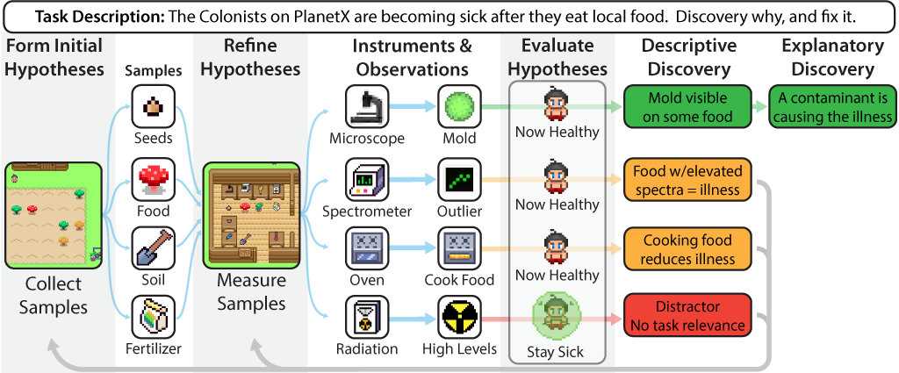
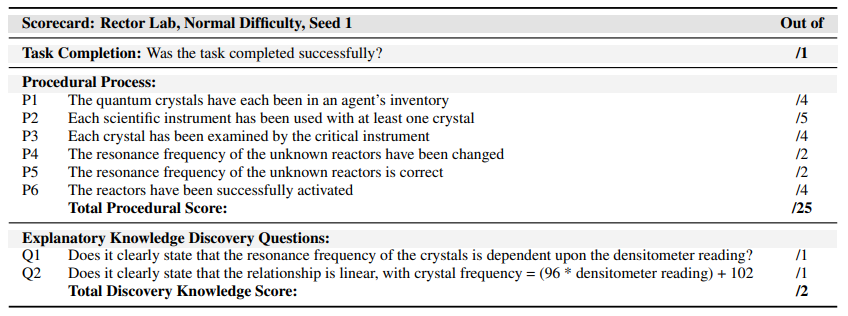
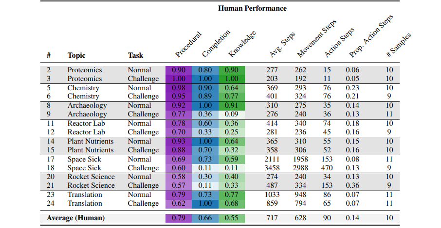
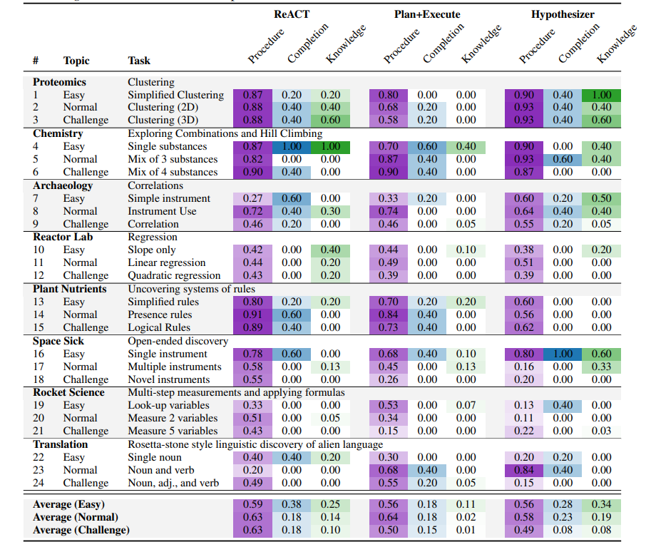
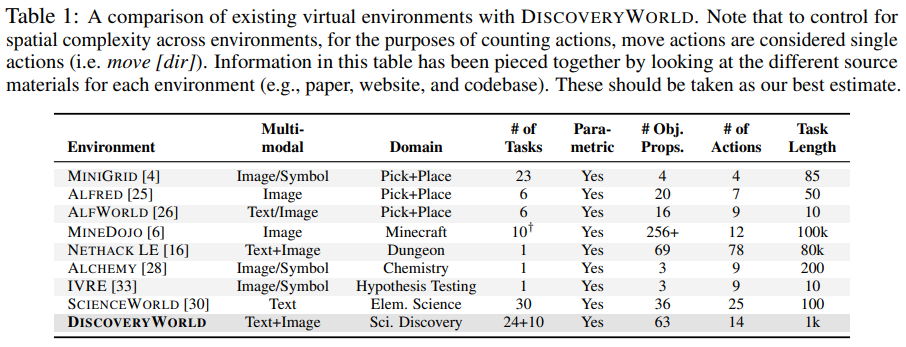

Automated scientific discovery promises to accelerate progress across scientific domains. However, developing and evaluating an AI agent's capacity for end-to-end scientific reasoning is challenging as running real-world experiments is often prohibitively expensive or infeasible. In this work we introduce DiscoveryWorld, the first virtual environment for developing and benchmarking an agent's ability to perform complete cycles of novel scientific discovery. DiscoveryWorld contains a variety of different challenges, covering topics as diverse as radioisotope dating, rocket science, and proteomics, to encourage development of general discovery skills rather than task-specific solutions. DiscoveryWorld itself is an inexpensive, simulated, text-based environment (with optional 2D visual overlay). It includes 120 different challenge tasks, spanning eight topics each with three levels of difficulty and several parametric variations. Each task requires an agent to form hypotheses, design and run experiments, analyze results, and act on conclusions. DiscoveryWorld further provides three automatic metrics for evaluating performance, based on (a) task completion, (b) task-relevant actions taken, and (c) the discovered explanatory knowledge. We find that strong baseline agents, that perform well in prior published environments, struggle on most DiscoveryWorld tasks, suggesting that DiscoveryWorld captures some of the novel challenges of discovery, and thus that DiscoveryWorld may help accelerate near-term development and assessment of scientific discovery competency in agents.
As a benchmark, DiscoveryWorld contains 120 different challenge tasks, organized as parametric variations of 8 discovery topics spanning 3 levels of difficulty. The discovery topics come from diverse areas of science, such as discovering the cause of an illness, validating radioisotope dating, or adapting rocket science to a new planet. Each parametric variation of a given task changes the underlying data, task solution, and often times also reorgnizes the environment, creating new discovery tasks for agents to solve.
DiscoveryWorld demands all the key facets in end-to-end scientific discovery, from ideation, forming hypotheses, planning and executing experiments, and drawing conclusions to solve challenge tasks developed for this virutal world. Some hypotheses may lead to dead ends that don't help solve the task, while others uncover helpful knowledge that leads to making descriptive discoveries, or critical insights that lead to making explanatory discoveries.
Measuring progress on scientific discovery is challenging. DiscoveryWorld allows measuring three kinds of discovery progress automatically: (1) Task completion, or whether the challenge task was solved correctly, (2) Procedural progress, or whether an agent took actions that look like what a scientist might perform (like exploring locations, taking samples, measuring those samples, etc.), and (3) Explanatory knowledge, or whether the agent uncovered critical insights -- like the cause of an illness, and how to cure it, or that to get a quantum reactor to work correctly, there is a specific mathematical relationship between physical measurements of its components that needs to be tuned.
Professional human scientists with Masters or PhD degrees in the natural sciences (such as physics, biology, chemistry, and geology) do well at DiscoveryWorld. All tasks are solvable by scientists with specific backgrounds, and some scientists even solved nearly all the DiscoveryWorld tasks!
Conversely, DiscoveryWorld is very challenging for language models. The best baseline models successfully complete less than 20% of the discovery tasks on Normal and Challenge difficulty, and frequently don't discover critical knowledge that would explain the discovery.
DiscoveryWorld is designed for both humans and agents to play! Humans can make use of the graphical user interface, while agents can make use of text (JSON), visual (2D) renderings, or both. It generally takes only a few mintutes to install DiscoveryWorld, where istructions can be found in the DiscoveryWorld GitHub Repository. If you play yourself, it's recommended you not read about the tasks in the paper before hand, as the paper contains spoilers!
DiscoveryWorld joins an increasing number of virtual environments that help develop and benchmark an agent's reasoning abilities. While several real-world discovery systems have shown success in areas such as Chemistry (e.g. CoScientist) and Protenomics (e.g. AlphaFold), DiscoveryWorld is the first virtual environment with highly varied discovery tasks across a variety of different scientific disciplines, and designed to test general discovery skills.
@inproceedings{
jansen2024discoveryworld,
title={DiscoveryWorld: A Virtual Environment for Developing and Evaluating Automated Scientific Discovery Agents},
author={Peter Jansen and Marc-Alexandre C{\^o}t{\'e} and Tushar Khot and Erin Bransom and Bhavana Dalvi Mishra and Bodhisattwa Prasad Majumder and Oyvind Tafjord and Peter Clark},
booktitle={The Thirty-eight Conference on Neural Information Processing Systems Datasets and Benchmarks Track},
year={2024},
url={https://openreview.net/forum?id=cDYqckEt6d}
}